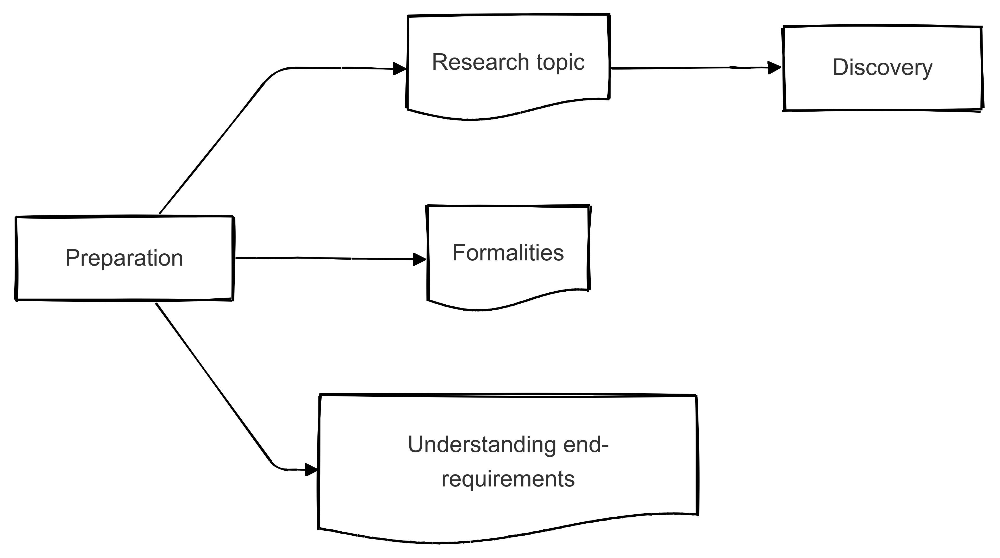

Fase 1 - Preparation#
Kun je met je opdrachtgever een volwassen inhoudelijk gesprek voeren over alle relevante bedrijfskundige onderwerpen van je onderzoek?
Begrijp je hoe het probleem dat je gaat onderzoeken samenhangt met de huidige ontwikkelingen binnen en buiten de organisatie?

Formele zaken en eindcriteria#
Bij de start van je afstudeertraject is het belangrijk dat je alle benodigde formele zaken op orde hebt. Denk hierbij aan je stage- of afstudeercontract, inschrijving in systemen als OSIRIS of HANDIN, en andere relevante toegangsrechten. Check of je overal bij kunt waar je onderzoek voor de organisatie en/of opleiding afhankelijk van is. Zo voorkom je vertraging en kun je je focussen op de inhoud van je onderzoek.
Daarnaast is het essentieel om de eindcriteria en de bijbehorende kwaliteitsniveaus goed te begrijpen. Deze geven richting aan het niveau waarop je moet afstuderen en welke competenties je moet aantonen. Ze bepalen immers wat van jou als afstudeerder wordt verwacht en hoe je eindproduct beoordeeld zal worden.
Opdracht 1
Kijk hier en welke persona(’s) het meest lijken op jouw persoonlijke en professionele situatie, en leg uit waarom jij jezelf hierin herkent. Bedenk vervolgens je eigen persona: hoe zie je jezelf als student en toekomstig professional en hoe sluiten de eindkwalificaties van het afstudeertraject hierbij aan? Beschrijf hoe deze kwalificaties jouw (leer)identiteit vormgeven, zodat je een duidelijk beeld krijgt van de rol die je wilt vervullen in het afstudeeronderzoek én daarna.
Organisatiecontext#
Een belangrijk onderdeel van de voorbereiding is om te checken of je een volwassen inhoudelijk gesprek kunt voeren met je opdrachtgever over de bedrijfskundige aspecten van het onderzoek. Dit houdt in dat je de kern van het probleem begrijpt en de vaktermen en theorieën kunt toepassen in de praktijk. Daarnaast is het essentieel om te weten hoe het te onderzoeken probleem past binnen de huidige (interne en externe) ontwikkelingen van de organisatie. Hiermee laat je zien dat je de context van je onderzoek overziet en kun je beter inschatten hoe je resultaten straks bijdragen aan zowel de bedrijfsdoelstellingen als je eigen leerdoelen.
Uiteindelijk toon je aan dat je in staat bent een duidelijke probleembeschrijving op te stellen, waarin je de kern van het vraagstuk benoemt en de organisatorische context beschrijft. Deze probleembeschrijving vormt de input voor de volgende fase, Discovery, waar je verder inzoomt op de aard en oorzaken van het probleem en een concrete onderzoeksvraag formuleert.
Opdracht 2
Fig. 2 Het six capital model voor waardecreatie. Uit: [ifr]#
Ga na hoe jouw organisatie waarde creëert door de zes vormen van kapitaal in kaart te brengen: Financial, Manufactured, Intellectual, Human, Social and Relationship en Natural. Bestudeer daarbij zowel de interne inrichting van het bedrijf (bijv. welke middelen en processen zijn aanwezig?) als de externe omgeving (bijv. marktontwikkelingen, wet- en regelgeving, concurrentie). Beantwoord onder andere de volgende vragen:
Interne analyse
Welke capital(s) zijn voor jouw organisatie het belangrijkst?
Op welke manieren zet de organisatie deze vormen van kapitaal in om waarde te creëren?
Hoe is de interne structuur en strategie daarop afgestemd?
Externe analyse
Welke externe trends, risico’s of kansen beïnvloeden de zes capital(s) van jouw organisatie?
Waar liggen mogelijke spanningsvelden of synergieën tussen de verschillende vormen van kapitaal en de ontwikkelingen in de omgeving?
Vat je bevindingen samen in een (korte) analyse en licht toe wat volgens jou de sterkste en zwakste punten in de waardeketen zijn. Deze inzichten helpen je om in de volgende fase (Discovery) de exacte onderzoeksvraag scherper te stellen en beter te begrijpen welke factoren het onderliggende probleem veroorzaken of versterken. Gebruik ook visualisaties om je verhaal te ondersteunen.
Fig. 3 Voorbeeld uitwerking six capital model. Uit: [PCTD23]#
Opdracht 3
Maak een beknopte, maar volledige probleembeschrijving waarin je de volgende vragen beantwoordt:
WHO
Wie ondervindt het probleem, en wie zijn de belangrijkste betrokkenen (bijv. afdelingen, klanten, ketenpartners)?
Welke rollen en belangen hebben deze partijen?
WHAT
Wat zijn de concrete signalen of symptomen van het probleem (bijv. dalende verkoop, hoge kosten, klachten)?
Waaruit blijkt dat het een urgent of relevant probleem is?
WHEN / WHERE
In welke situaties (tijd, locatie, processtappen) doet het probleem zich voor?
Zijn er specifieke momenten of omstandigheden waar het probleem extra opvalt?
WHY
Waarom komt dit probleem voor (mogelijke oorzaken, onderliggende factoren)?
Welke interne en externe ontwikkelingen spelen mee? Denk aan markttrends, concurrentie of wet- en regelgeving.
Gebruik je antwoorden om een heldere probleemdefinitie te formuleren. Benoem wie het betreft, wat er precies speelt, waar en wanneer dit zich voordoet, en waarom het problematisch is. Deze probleembeschrijving helpt je straks om gericht te onderzoeken waar de oorzaken liggen en welke oplossingsmogelijkheden er zijn.